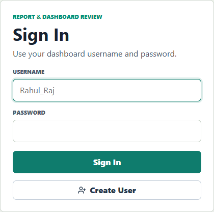
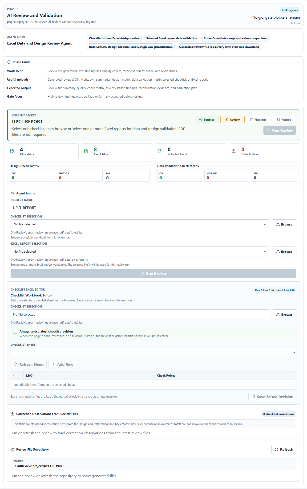
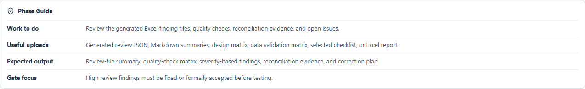
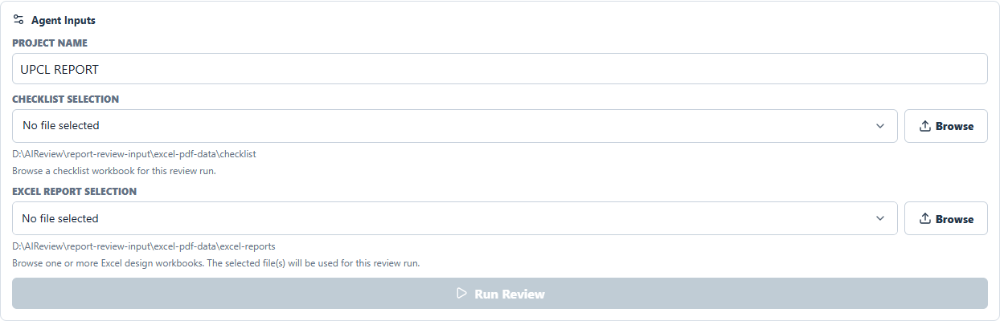
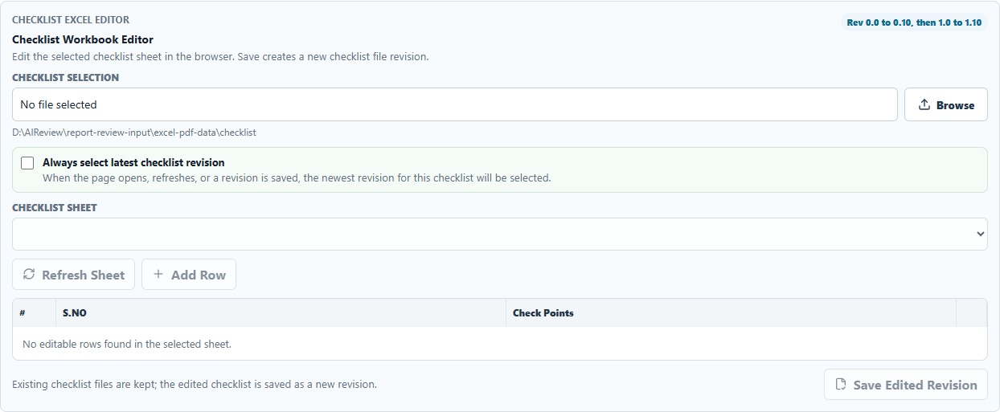
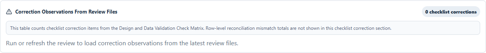
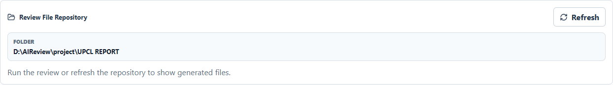

Step-by-step standard operating procedure for installing, running, and using the DA Automation duplicate UI for Excel report review.
Excel-only validation Checklist revision control Data and design corrections Latest PDF/TXT repository Project/category/date output folders
This SOP explains how to configure and run the DA Report Review UI on another Windows user system, how to validate selected Excel reports, and where to find the generated review files.
Before running the UI on another user system, keep the same base folder structure under D:\AIReview.
| Folder | Purpose |
|---|---|
D:\AIReview\da_automation\DA AUTOMATION UI | Duplicate UI application, server code, scripts, and SOP files. |
D:\AIReview\report-review-agent | Review-agent code used by the UI to run Excel design/data validation. |
D:\AIReview\report-review-input\excel-pdf-data\checklist | Default checklist workbook folder. |
D:\AIReview\report-review-input\excel-pdf-data\excel-reports | Default Excel report folder. |
D:\AIReview\project | Generated review file repository. The UI creates project/category/date folders here. |
D:\AIReview project folder or restore the same folders listed in Section 2.D:\AIReview\project and the input folders.node -v npm -v python --version
Open D:\AIReview\da_automation\DA AUTOMATION UI\.env and confirm the host/port settings.
APP_HOST=127.0.0.3 APP_PORT=5190 APP_PREVIEW_PORT=4190 API_HOST=127.0.0.3 API_PORT=8802
127.0.0.3, change both APP_HOST and API_HOST to 127.0.0.1. If port 5190 or 8802 is already in use, choose a free port and update the matching value in .env.Run these commands from Command Prompt. Use two terminal windows for the server and client.
| Step | Command | Expected Result |
|---|---|---|
| Open UI folder | cd /d "D:\AIReview\da_automation\DA AUTOMATION UI" | Command prompt is inside the UI project folder. |
| Install packages | npm install | node_modules is installed or refreshed. |
| Start API server | npm run dev:server | API starts on http://127.0.0.3:8802/. |
| Start UI client | npm run dev:client | Vite UI starts on http://127.0.0.3:5190/. |
| Open browser | http://127.0.0.3:5190/ | Login screen appears. |
Alternative single-command startup: run npm run dev from the UI folder. This starts server and client together.



| Phase Guide Row | Meaning |
|---|---|
| Work to do | Review generated Excel finding files, checklist status, correction evidence, and open issues. |
| Useful uploads | Generated review JSON, Markdown summaries, design matrix, data validation matrix, selected checklist, or Excel report. |
| Expected output | Review summary, matrix counts, correction observations, generated PDF/TXT files, and sign-off evidence. |
| Gate focus | High review findings must be fixed or formally accepted before testing/sign-off. |

| Input | User Action | Important Rule |
|---|---|---|
| Project Name | Type the project name, for example UPCL REPORT. | This project name is written inside review files and used in the output folder path. |
| Checklist Selection | Select a checklist from the dropdown or use Browse. | No file is selected by default in browse mode. Select the intended checklist before running. |
| Excel Report Selection | Select one or multiple Excel files from dropdown/browse. | Select one file for a single report review or multiple files for same-family cross-report validation. |
| PDF Report Selection | No action required. | The current duplicate UI validates Excel files only. PDF report files are not required. |
| Run Review | Click after required selections are complete. | Each click starts a fresh review from the current selected files; old saved output is not used as validation input. |

Revision sequence follows: Rev 0.0 to Rev 0.10, then Rev 1.0 to Rev 1.10, continuing in the same pattern.
The cards above Agent Inputs summarize checklist-matrix status counts.
| Card | Meaning |
|---|---|
| Design Check Matrix | OK, Not OK, and NA counts from design checklist validation. |
| Data Validation Check Matrix | OK, Not OK, and NA counts from data validation checklist rules. |

The Correction Observations block appears after the Checklist Workbook Editor. It is split into two parts:
| Section | What It Shows | How To Use It |
|---|---|---|
| Data Correction Observations | Not OK data-validation checklist points from the latest review files. | Fix source data, hierarchy aggregation, report values, or document approved exception evidence. |
| Design Correction Observations | Not OK design checklist points from the latest review files. | Fix report layout, naming, header, formatting, alignment, or document approved design evidence. |
| Column | Meaning |
|---|---|
| Point | Sequential correction observation number shown in UI. |
| Checklist S.NO | Checklist serial number from the generated review matrix. |
| Report | Report where the checklist item is Not OK. |
| State | Observed status, normally Not OK for actionable rows. |
| Check Point | Checklist rule that failed. |
| Observation | Evidence extracted from generated review files. |
| Correction Required | Action required before approval/sign-off. |
All generated review files are saved under the project repository root:
D:\AIReview\project\<Project Name>\<Report Category>\<DD-MM-YYYY HH-MM-SS>\
| Report Category Folder | When It Is Used | Example |
|---|---|---|
| Analog Reports | Selected Excel report headers indicate Analog reports only. | D:\AIReview\project\UPCL REPORT\Analog Reports\20-07-2026 16-04-50\ |
| Saifi Saidi Reports | Selected Excel report headers indicate SAIFI/SAIDI reports only. | D:\AIReview\project\UPCL REPORT\Saifi Saidi Reports\20-07-2026 16-04-50\ |
| Miscellaneous | Selected files are mixed, unknown, or not one recognized family. | D:\AIReview\project\UPCL REPORT\Miscellaneous\20-07-2026 16-04-50\ |
Existing generated files are kept. A new run creates a new timestamp folder; no previous review files are deleted by the UI workflow.
A successful run can generate the following artifacts inside the timestamp folder:
*-design-review.pdf - design review PDF.*-excel-data-validation.pdf - Excel data validation PDF.*.txt - text summary for quick review.*.md - Markdown review summaries.*.json - structured review result.*-design-check-matrix.xlsx - design matrix workbook.*-data-validation-check-matrix.xlsx - data validation matrix workbook.*-ui-run-summary-*.json - UI run summary metadata.The review files include the UI project name and the logged-in reviewer name.

D:\AIReview\project\<Project Name>.| # | User Check | Expected Result |
|---|---|---|
| 1 | Confirm login user. | Reviewer name in output matches the logged-in UI user. |
| 2 | Confirm project name. | Output path is under D:\AIReview\project\<Project Name>. |
| 3 | Confirm selected checklist and Excel reports. | Selected files match the reports intended for review. |
| 4 | Check report-family category folder. | Analog, SAIFI/SAIDI, or Miscellaneous folder is created correctly based on report header names. |
| 5 | Open Correction Observations. | Data and Design observations are listed separately with actionable correction text. |
| 6 | Open generated PDF/TXT files from repository. | PDF/TXT files match the latest timestamp folder and contain the same matrix/correction details. |
| 7 | Refresh browser. | Previous output is not loaded into the UI by default. Repository can be refreshed when files need to be viewed again. |
| Issue | Action |
|---|---|
| UI does not open | Confirm npm run dev:client is running and open http://127.0.0.3:5190/. |
| API requests fail | Confirm npm run dev:server is running on http://127.0.0.3:8802/. |
| Port already used | Stop the old process or change APP_PORT/API_PORT in .env. |
| Run Review disabled | Enter project name and select checklist plus Excel report files. |
| Checklist editor empty | Select a checklist workbook, choose a sheet, then click Refresh Sheet. |
| Generated files not visible | Click Repository Refresh and verify the timestamp folder under D:\AIReview\project\<Project Name>. |
| Counts appear different | Matrix cards count checklist OK/Not OK/NA rows. Correction Observations count actionable checklist correction rows. Row-level mismatch totals can be higher because one rule can produce many mismatched rows. |
| SAIFI/SAIDI result looks mismatched by direct report pair | Confirm Feeder Wise is selected as the base report. Child reports must be validated by grouping Feeder Wise data to Circle, Division, Subdivision, Zone, or Feeder Category level. |